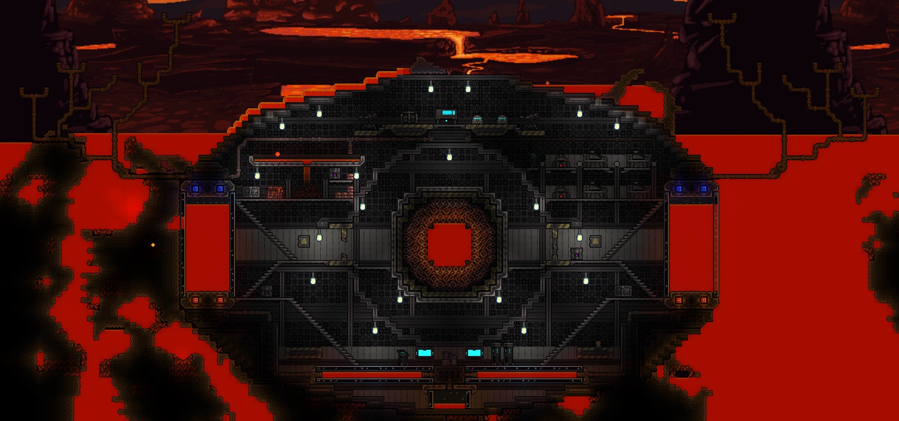

Subject DM1-6, dubbed The Slayer is a novel Terrarian lifeform, originating beyond the confines of the Terrariums, suggesting that the subject somehow broke into the realm of the Terrariums in order to achieve a personal goal of some sort. The lifeform has been deduced to be a male lifeform, with black hair and pale skin. Apart from the typical seemingly omnipotent strength of the Terrarium lifeforms, The Slayer seems to find joy in the indiscriminate destruction of all things related to the World Evils and the underworld.
